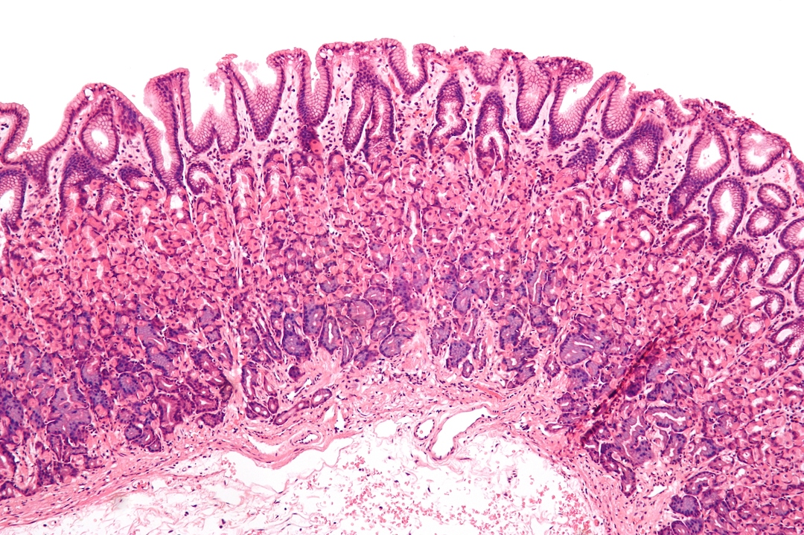
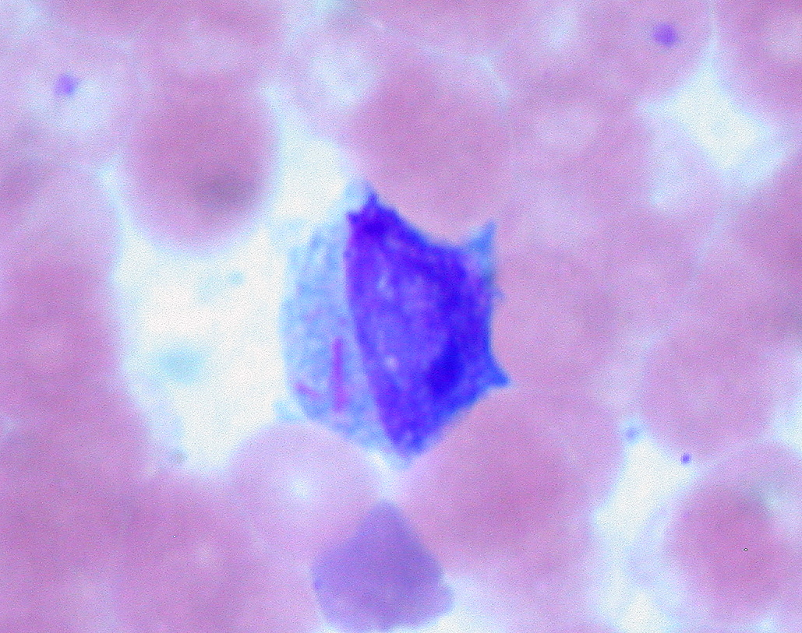

Upload new File

Intermediate magnification micrograph of normal gastric mucosa, i.e. inner most layer of the stomach. H&E stain.
By Nephron - Own work, CC BY-SA 3.0, Link
Go somewhere

This patient has apparent recurrence of treated acute myeloid leukemia after 7-year remission. Wright stain, 1000X.
By Ed Uthman from Houston, TX, USA - Auer Rods in Leukemic BlastUploaded by CFCF, CC BY 2.0, Link
Go somewhere
High magnification micrograph of nested variant of urothelial carcinoma, also nested urothelial carcinoma and nested variant of urothelial cell carcinoma. H&E stain.
By Nephron - Own work, CC BY-SA 3.0, Link
Go somewhere